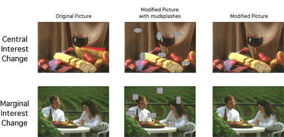
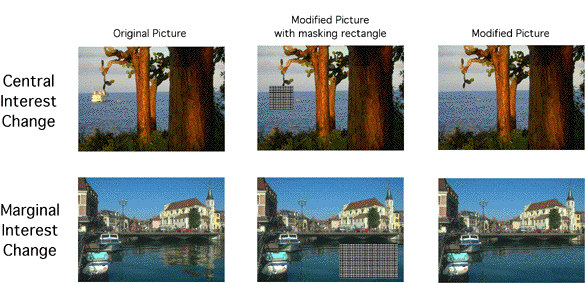
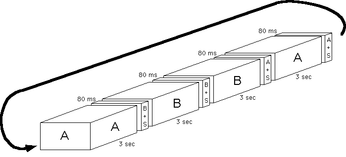
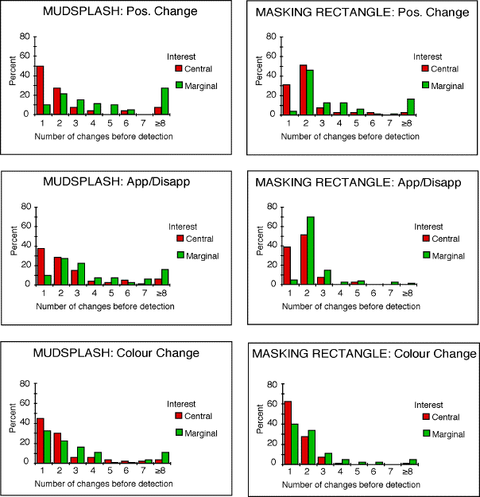

(a modified version of this html file is to appear on Nature's supplementary
information website)
Supplementary Information for "Change blindness as a result of mudsplashes"
J.K. O'Regan1,2,
R..A.
Rensink2
& J.J.
Clark3
1Laboratoire de Psychologie Expérimentale, CNRS,
Paris;
2Cambridge Basic Research, Nissan Research and Development,
Inc.
3Electrical Engineering Department, McGill University
view penultimate draft of article
Stimuli used in the Experiments
The 48 pictures of natural scenes were taken from a commercial CDrom database
of professional quality photographs (Corel). In the examples below, a Central
Interest and a Marginal Interest change is shown for each of the mudsplash
and masking rectangle experiments.
Examples for the mudsplash experiment

Examples for the masking rectangle experiment:

Definition of Central and Marginal Interest locations
A Central Interest element was a part of the picture that was referred
to by 3 or more of 6 judges who had been asked to describe the pictures
in an independent pilot experiment. The Central Interest elements were
thus essentially 'what the picture was about'. The Marginal Interest elements,
on the contrary, were parts of the picture that had been referred to by
none of the 6 judges. They were generally parts that constituted the setting
in which the main action of the scene took place. They could be foreground
as well as background objects, so long as they were not part of the "action".
The Marginal Interest changes were carefully chosen to be as visually conspicuous
as the Central Interest changes, as measured by the number of pixels that
were changed, and by the size and position within the picture of the change.
The picture pairs used were the same as in the experiment using flicker
(Rensink et al., 1997). The mean centroid of the CI locations were
at (x,y) pixel coordinates (-8 ±136, -5 ± 86) relative to
the center of the 640 x 480 pixel screen, and at coordinates (92 ±
195, -11 ± 139) for the MI locations (the ± values
are standard deviations). The nature of the change between the original
and modified pictures was very strictly controlled so as to ensure that
there was no difference in the visual conspicuity of the change for the
CI and MI changes. Thus the mean proportion of modified pixels in the picture
was 4.2 ± 4 % and 5.1± 4 %, for CI and MI changes respectively.
The mean euclidean distance in the RGB values across all the changed pixels
was 104 ± 24 and 101 ± 51 respectively for CI and MI changes.
Finally, the mean intensity change of the changed pixels was 127 ±
63 and 126 ± 110 for CI and MI changes. These values show that on
purely visual measures, the CI and MI changes were equivalent. Any difference
in the probability of noticing the changes was therefore attributable to
differences in the semantic relevance of the changes.
Procedure
The original (A) and modified (B) picture were each presented for 3 s in
the order ABBAABB... At each picture change an 80 ms display of picture
A+mudsplashes (or masking rectangle) or of B+mudsplashes (or masking rectangle)
was displayed, as illustrated below. The observer's task was to press a
button as soon as he or she saw a change. The experimenter then asked the
observer to say what the change was. If the observer answered incorrectly,
this was counted as an error.

Results

Some theoretical points
The role of visual transients in determining blindness
to scene changes: diversion rather than erasure or masking.
Visual transients are fast luminance transitions in the visual field that
accompany any change that takes place and which exogenously attract attention
(cf. eg. Klein, Kingstone & Pontefract, 1992). In the change blindness
experiments, the mudsplashes, flicker, saccades, blinks or film cuts, generate
large additional transients which may interfere with the normally occurring
transients and thereby impair perception of the display change.
There are three reasonable hypotheses about how this interference may
come about: erasure, masking, and diversion.
The erasure hypothesis is related to eye movements. Each time
the eye moves, the retinal image shifts, and the retinal coordinates of
objects in the scene are displaced. The large visual transient created
on the retina by the smearing of contours during the saccade may be used
by the visual system to signal that new information has become available
for processing, and that a process of recombination must be triggered to
relocate the old information and combine it with the new information being
supplied. Depending on the compatibility of old and new information, some
information from the period preceding the transient may be lost.
It is possible that in addition to the usual transients created by eye
saccades, other types of global transients, such as those provoked by the
flicker, blink or film cut manipulations, could also trigger resetting
of the internal buffers, and cause problems in detecting display changes.
However, mudsplashes, since they are fairly small and few in number, can
hardly be considered to be global transients. It seems unlikely that they
should be able to trigger any recombination/erasure mechanism. Another
argument also suggests that the erasure hypothesis is inappropriate: if
the content of the internal representation of the world is erased at the
moment of a transient, then everything should be erased to an equal extent.
Yet it is found that Central Interest locations are less susceptible to
change blindness than Marginal Interest locations .
A second possibility for the way transients might interfere with change
detection is through masking: The transient provoked by the saccade,
flicker, etc. is large in comparison to the transient due to the sought-for
change. Interaction of the two transients may, through superposition or
through metacontrast masking, erase or mask the information due to the
true transient .
As before, this explanation of blindness to scene change may apply in
the case of saccades and manipulations which create global transients,
since these are guaranteed to cover or at least to be sufficiently near
to the "true" transient for superposition or metacontrast masking to act
. But in the case of the mudsplash experiment, the mudsplashes are far
from the true change location, and it does not seem reasonable to suppose
that the excercise a masking effect.
A final possibility to explain the effect of the additional transients
created by the mudsplash, flicker, etc., manipulations is to suppose that
their effect is to act as a "diversion" : Instead of there being
just one transient in the visual field corresponding to the true change,
attentional ressources must now be distributed over many transients. The
probability that attention will be directed to the true location is diminished.
This explanation will work not only in the flicker, saccade, blink and
film-cut experiments which generated transients all over the visual field,
but also in the mudsplash experiment, where there were six mudsplashes,
and so six diverting transients.
Overview of the hypothesized mechanism of change blindness
The following seems to be the explanation of the mudsplash and related
effects. The explanation is in four stages.
1. Encoding: As an observer contemplates a picture, attention processes
the different aspects of the picture and encodes them into memory . It
seems that only a small number of aspects (the "Central Interest" aspects)
of the scene will be encoded.
2.Diversion by transients: The disturbance caused by the mudsplash,
flicker, blinks, saccades or film cuts, arranged to occur simultaneously
with the true change in these experiments, generates many transients located
all over the picture in addition to the particular local transient caused
by the "true" change. Instead of going to the true change location, attention
is sollicited by a multitude of transients among which it must choose.
The probability that attention will go to the location corresponding to
the true change is small.
3. Comparison at the transient locations: After attention has moved
to one of the transient locations, comparison is attempted between what
is currently at that location, and what was previously encoded in memory
about that location. It is likely that the location will not be a Central
Interest location: the observer will not have encoded its contents, and
will not be able to tell whether a change has occurred. In experiments
where the change is made repetitively, the observer can adopt the strategy
of waiting to see whether at the next repetition a change occurs.
4. The observer can then go on to check the next location where a transient
occurs. Unless the change occurs at a Central Interest location which has
been encoded into memory, a true change will only be detected after it
has been attained via this serial checking process. (Such serial checking
of each mudsplash location predicts that in the case of marginal interest
changes the change should on average be found after checking half of the
transient locations. Since there were six mudsplashes and one true change
location, we expect time to detection to be 3.5 cycles. This is close to
the value that was found)
Literature related to Change Blindness
The state of the literature on change blindness has been reviewed by Simons
& Levin (1997) and Intraub (1997). As of July 1998, a special issue
of the Journal Visual Cognition is in preparation on the topic of change
blindness and visual memory (guest editor: D.J. Simons, Harvard University).
Saccade-contingent experiments
The first studies of change blindness in natural scenes were those conducted
in G. McConkie's laboratory (Grimes, 1996; Currie, McConkie, Carlson-Radvansky
& Irwin, 1995; McConkie & Currie, 1996). In these studies, observers
looked at pictures of natural scenes while their eye movements were being
recorded. The authors observed that large changes in the pictures could
be made without the observers noticing them, provided the changes were
synchronised with the occurrence of an eye saccade. The changes that were
missed could be surprisingly large, involving a significant area of the
pictures (sometimes 25%, cf. Grimes, 1996). A study by Blackmore, Brelstaff,
Nelson, & Troscianko (1995) showed similar results in conditions where
a picture shifted (and presumably a saccade occurred) at the same time
as it changed. In simpler displays, Ballard, Hayhoe & Whitehead (1992)
found that a display of blocks could be changed during eye saccades without
observers noticing it, and Zelinsky (1997, 1998) has studied perception
of eye-contingent changes in scenes of objects on a table.
A number of earlier studies performed with saccade-contingent display
changes had prefigured the McConkie laboratory results using simpler stimuli:
Bridgeman, Hendry & Stark (1975) had shown that a large visual pattern
could be shifted during saccades; McConkie & Zola (1979) had cHaNgEd
tHe AlTeRnAtInG CaSe of sentences being read and O'Regan (1981) had shown
that text could be shifted: in all cases the change would not be noticed
(cf review by Irwin, 1992). A large literature exists concerning changes
made in text during reading in order to understand the mechanisms of eye
movement control during reading (cf. e.g. review by O'Regan, 1990; Rayner
& Pollatsek, 1987).
Up until recently all this work had been situated in the framework of
theories of visual stability: researchers were trying to answer the question
of why the world does not appear to move when we move our eyes. A whole
literature existed which showed that simple stimuli like dots appeared
mislocalized if they were flashed up during saccades. The results were
interpreted as demonstrating inaccuracies of the saccade-specific mechanisms
in the visual system that patch together the series of "snapshots" provided
by the successive eye fixations that occur during visual exploration (cf
reviews by Matin, 1972; 1986).
Experiments with visual transients
Recent results (prefigured by earlier studies of Phillips, 1974, and Pashler,
1988) performed without synchronizing scene changes with eye movements,
suggest that the previously observed effects might have little to do with
saccades themselves, but might instead simply be related to the large visual
transients that the saccades induce. One suggestion of this was the experiment
of Rensink, O'Regan & Clark (1997), in which the display change was
preceded by a brief (80 ms) gray flash that covered the whole picture.
Like Grimes et al. (1996) and McConkie & Currie (1996), Rensink et
al. observed that very large display changes often went unnoticed. Further
experiments using different display durations and flash durations, as well
as different colors for the flash, confirmed and extended the results (Rensink,
O'Regan & Clark, in press).
Since the Rensink, O'Regan & Clark (1997) experiment, several experiments
have been performed using other techniques in which the picture change
coincides with a visual transient. The experiment with mudsplashes reported
in the present issue of Nature (see also O'Regan, Rensink & Clark;
1996) is a first example. Experiments have also been performed with groups
of isolated objects rather than whole scenes (Zelinsky, 1997). O'Regan,
Deubel, Clark & Rensink (1997; in press) synchronised display changes
with eye blinks. Similar results have been obtained with motion picture
sequences (Levin & Simons, in press): at the moment of a camera cut
(which produces a visual transient), a salient object in the scene is changed.
In all these experiments, large display changes are often not seen.
Work suggesting that the internal representation
is sparse
A large literature on short-term visual sensory memory ("iconic" memory)
has been reviewed by Coltheart (1983), Long (1980), Hochberg (1984) and
Haber (1983).
Pashler (1974; 1995) showed that the time it takes to report a probed
character in an array of characters does not depend on the amount of time
the characters were visible before the probe appeared. This suggests that
even though they are visible, there is no processing of the characters
before the probe appears.
Wolfe (1997a,b) and Wolfe, Klempen & Dahlen (submitted) show that
the time it takes to find a target character in a display does not diminish
when the display has already been seen many times before, nor does it increase
if the non-target letters change from trial to trial. Wolfe interprets
the results in terms of a theory in which he supposes that in order for
an item in the visual field to be classified or recognized, attention must
be deployed onto the item. Before attention is deployed ("pre-attentive
vision"), and after attention has left an item ("post-attentive" vision),
its characteristics are not combined together to form an object, but remain
part of a kind of "primeval soup" of undifferentiated visual "stuff". Wolfe
calls his theory "inattentional amnesia", and says it can explain
what
Rock, Linnett, Grant & Mack (1992), Mack & Rock (1996) and
Mack, Tang, Tuma & Kahn (1992) call "inattentional blindness" (see
also Joseph, Chun & Nakayama, 1997). In this, observers are unable
to see a stimulus which is perfectly visible but to which they are not
attending.
The world as an outside memory, or as its own representation.
The idea that there is no need to re-present the visual field inside the
brain was coherently argued by MacKay (e.g. 1973) and taken up again by
O'Regan (1992). Similar or related ideas are expressed by Ballard, Hayhoe
& Pook (1995), Wolfe (1997a,b), Edelman (in press), and from a philosophical
point of view by Dennett (1991), Varela, Thompson & Rosch (1991) and
Noë, Pessoa & Thompson (submitted).
The question is relevant to the debate (reviewed by Pessoa, L., Thompson,
E., & Noë, A., in press) on how the brain fills in visual scotomas
or the blindspot, and the mechanisms underlying the perception of illusory
contours.
References
Ballard, D.H., Hayhoe, M.M., & Whitehead, S.D. (1992) Hand-eye coordination
during sequential tasks. Philosophical Transactions of the Royal Society
of London B., 337, 331-339.
Ballard, D.H., Hayhoe, M.M. & Pook, P.K. (1995) Deictic codes for
the embodiment of cognition. Technical Report 95.1. National Laboratory
for the study of Brain and Behavior, University of Rochester.
Blackmore, S.J., Brelstaff, G., Nelson, K., & Troscianko, T. (1995)
Is the richness of our visual world an illusion? Transsaccadic memory for
complex scenes. Perception 24, 1075-1081.
Bridgeman, B., Hendry, D., & Stark, L. (1975) Failure to detect
displacements of the visual world during saccadic eye movements. Vision
research, 15, 719-722.
Coltheart, M. (1983) Iconic memory. Phil. Trans. R. Soc. Lond. B 302,
283-294.
Currie, C., McConkie, G.W., Carlson-Radvansky, L.A., & Irwin, D.
E. (1995) Maintaining visual stability across saccades: role of the saccade
target object. Technical Report No. UIUC-BI-HPPP-95-01. Champaign: Beckman
Institute, University of Illinois.
Dennett, D.C., (1991) Consciousness explained. Boston: Little Brown.
Edelman, S. (in press) Representation is representation of similarities.
Brain and Behavioural Sciences
Grimes, J. (1996) On the failure to detect changes in scenes across
saccades, in Perception: Vancouver Studies in Cognitive Science, Vol 2
(Akins, K. ed.), pp. 89-110, OUP.
Haber, R.N. (1983) The impending demise of the icon: A critique of
the concept of iconic storage in visual information processing. Behavioural
and Brain Sciences, 6, 1-54.
Hochberg, J. (1984) Form perception: Experience and explanations. In
P.C. Dodwell & T. Caelli (Eds.) Figural synthesis. Hillsdale, NJ: Erlbaum,
pp, 309-331.
Irwin, D.E. (1992) Perceiving an integrated visual world. In D.E. Meyer
and S. Kornblum (Eds.), Attention and performance XIV: Synergies in experimental
psychology, artificial intelligence, and cognitive neuroscience -- A silver
jubilee. Cambridge, Mass: MIT Press, pp 121-142.
Intraub, H. (1997) The representation of visual scenes. Trends in Cognitive
Sciences, 1, 217-221.
Joseph, J.S., Chun, M.M., & Nakayama, K. (1997) Attentional requirements
in a "preattentive" feature search task. Nature, 387, 805.
Levin, D.T. & Simons, D.J. (in press) Failure to detect changes
to attended objects in motion pictures. Psychonomic Bulletin and Review.
MacKay, D.M. (1967) Ways of looking at perception. In W. Wathern-Dunn
(Ed.) Models for the perception of speech and visual form. Cambridge, Mass:
MIT Press, pp. 25-43.
Long, G.M. (1980) Iconic memory: A review and critique of the study
of short-term visual storage. Psychological Bulletin, 88, 785-820.
MacKay, D.M. (1973) Visual stability and voluntary eye movements. In
R. Jung (Ed.) Handbook of sensory physiology, Vol VII/3A. Berlin: Springer,
pp. 307-331.
McConkie, G.W. and Currie, C.B. (1996) Visual stability across saccades
while viewing complex pictures. Journal of Experimental Psychology: Human
Perception & Performance. 22, 563-581.
McConkie, G.W., & Zola, D. (1979) Is visual information integrated
across successive fixations in reading? Perception & psychophysics,
25, 221-224.
Mack, A., & Rock, I. (1996) Inattentional blindness: Perception
without attention. In R. Wright (Ed.), Perception and Attention.
Mack, A., Tang, B., Tuma, R. & Kahn, S. (1992). Perceptual organization
and attention. Cognitive Psychology, 24, 475-501.
Matin, L. (1972) Eye movements and perceived visual direction. In D.
Jameson and L.M. Hurvich (Eds.), Handbook of sensory physiology (Vol. VII/4).
Visual psychophysics. Berlin, Springer Verlag, pp. 331-380.
Matin, L. (1986) Visual localization and eye movements. In. Boff, Kaufman
and Thomas (Eds.) Handbook of perception and human performance, Vol I.
Wiley, pp. 20-1 - 20-45.
Noë, A., Pessoa, L, & Thompson, E. (submitted to Visual Cognition)
Beyond the grand illusion hypothesis: What change blindness really teaches
us about vision.
Noton, D., & Stark, L. (1971) Eye movements and visual perception.
Scientific American, 224, 34-43.
O'Regan, J.K. (in preparation). A different view of "seeing"
O'Regan, J.K. (1981) The convenient viewing position hypothesis. In:
D.F. Fisher, R.A. Monty, & J.W. Senders, Eye Movements: Cognition
and Visual Perception. L. Erlbaum, Hillsdale.
O'Regan, J.K. (1990) Eye movements and reading. In E. Kowler (Ed.)
Eye movements and their role in visual and cognitive processes. Amsterdam:
Elsevier, pp. 395-353.
O’Regan, J.K. (1992) Solving the “real” mysteries of visual perception:
the world as an outside memory. Canadian journal of psyhcology. 46, 461-488.
O’Regan, J.K., Rensink, R.A. & Clark, J.J. (1996) “Mud splashes”
render picture changes invisible. Invest. Ophthalmol. Vis. Sci. 37 S213.
O’Regan, J.K., Deubel, H., Clark, J.J. & Rensink, R.A. (1997) Picture
changes during blinks: Not seeing where you look and seeing where you don’t
look. Invest. Ophthalmol. Vis. Sci. 38, S707.
O'Regan, J.K., Deubel, H., Clark, J.J. & Rensink, R.A. (in press)
Picture changes during blinks:: Looking without seeing and seeing without
looking. Visual Cognition.
Pessoa, L., Thompson, E., & Noë, A. (in press) Finding about
about filling in: a guide to perceptual completion for visual science and
the philosophy of mind. Behavioral and brain sciences, 21.
Pashler, H. (1988) Familiarity and visual change detection. Perception
& Psychophysics, 44, 369-378.
Pashler, H. (1995) Attention and visual perception: Analyzing divided
attention. In S.M. Kosslyn and D.N. Osherson (eds.) Visual Cognition. An
invitation to cognitive science. Vol 2. Cambridge, Mass: MIT Press, pp
71-100
Pashler, H. (1984) Evidence against late selection: Stimulus quality
effects in previewed displays. Journal of Experimental Psychology: Human
Perception and Performance, 10, 429-448.
Phillips, W.A. (1974) On the distinction between sensory storage and
short-term visual memory. Perception & Psychophysics, 16, 283-290.
Rayner, K. & Pollatsek, A. (1987) Eye movements in reading: A tutorial
review. In M. Coltheart (Ed.) Attention and Performance 12, Hillsdale,
NJ: Erlbaum;, pp. 327-362.
Rensink, R., O'Regan, J.K. & Clark, J.J. (1995) Image flicker is
as good as saccades in making large scene changes invisible. Perception,
24 (suppl.) 26-27.
Rensink, R.A., O’Regan, J.K. & Clark, J.J. (1997) To see or not
to see: the need for attention to perceive changes in scenes. Psychological
Science, 8, 5, 368-373.
Rensink, R.A., O’Regan, J.K. & Clark, J.J. (in press) On the failure
to detect changes in scenes across brief interruptions. Visual Cognition.
Rock, I., Linnett, C., Grant, P., & Mack, A. (1992) Perception
without attention: Results of a new method. Cognitive Psychology, 24, 502-534.
Simons, D.J. (1996) In sight, out of mind: when object representations
fail. Psychological Science, 7, 301-305.
Simons, D. J. (in preparation). Representing spatial layout across
viewpoint changes. Manuscript in revision.
Simons, D. & Levin, D.(1997) Change blindness. Trends in Cognitive
Sciences, 1, 261-267.
Varela, F.J. & Thompson, E. & Rosch, E., (1991) The embodied
mind: cognitive science and human experience. Cambridge: MA: The MIT Press.
Wolfe, J.M. (1997a) Inattentional amnesia, In V. Coltheart (Ed.) Fleeting
Memories. Cambridge, MA: MIT Press, pp. ???-???.
Wolfe, J.M., Cave, K.R., & Franzel, S.L. (1989) Guided search:
An alternative to the feature integration model for visual search. Journal
of Experimental Psychology: Human Perception and Performance, 15, 419-433.
Wolfe, J.M., Klempen, N. & Dahlen K. (submitted) Post-attentive
vision.
Wolfe, J. M. (1997b). Visual experience: Less than you think, more
than you know. In C. Taddei-Ferretti (Ed.), Neuronal basis and psychological
aspects of consciousness., (pp. in press). Singapore: World Scientific.
Zelinsky, G.J. (1997) Eye movements during a change detection search
task. Invest. Ophthalmol. Vis. Sci. 38/4, S373.
Zelinsky, G.J. (1998) Detecting changes between scenes: a similarity-
based theory using iconic representations. Beckman Institute for Advanced
Science & Technology, Technical Report Series No. CNS-98-01